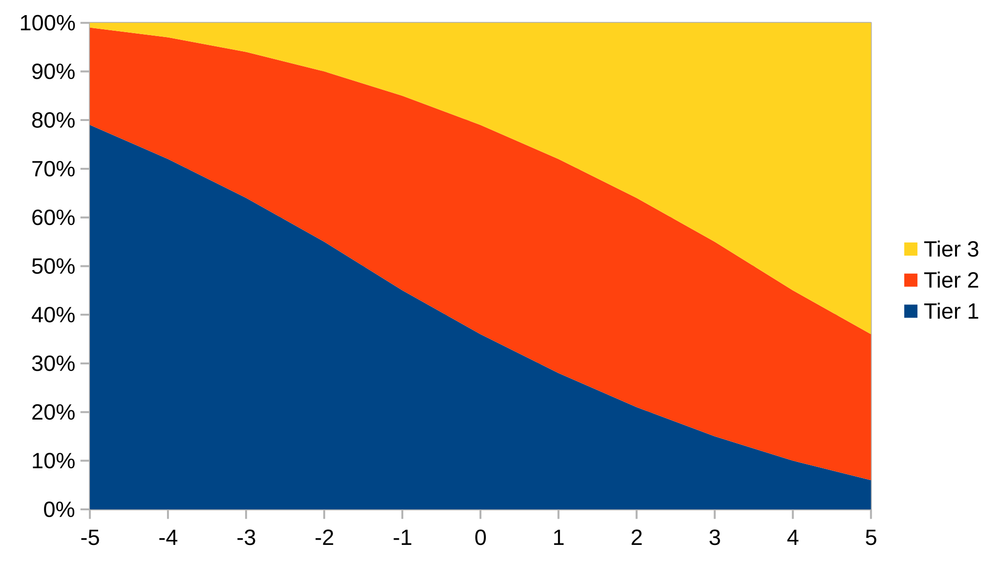
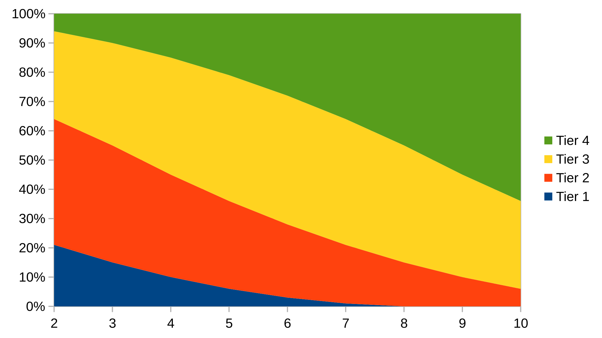

The universe holds many mysteries waiting to be uncovered. Discard every assumption and pretense of knowing. You must be fearless and stay sharp at all times.
To play the game, you need polyhedral dice (d4, d6, d8, d10, d12, d20) and some way to track the Characters, be it pen and paper or digital. A Game Master and willing Players to form a Party. Snacks, optional but highly recommended.

Your character has three attribute scores; these are the measure of basic strengths and weaknesses.
STR: Strength, Endurance, Resilience.DEX: Dexterity, Speed, Agility.WIL: Willpower, Charisma, Awareness.Characters naturally fall between -2 and +3. But with magic they can be pushed to -5 and +5.
Chose a method, and stick to it:
3 1 -1.1d6 - 3. You can swap two OR re-roll one attribute.Rolled 4 -> 4-3 = 1 STR
Rolled 3 -> 3-3 = 0 DEX
Rolled 5 -> 5-3 = 2 WIL
Swapped DEX and WIL.
Recorded as:
STR 1 DEX 2 WIL 0The only “Main” stat is the Hit Protection:
HP: Hit Protection - this is the damage your character can take without the
risk of serious injuries.Chose a method and stick to it:
2d6 and keep the
highest.Rolled (3 6) -> 6 HP
Recorded as: HP Current/Max
STR 1 DEX 2 WIL 0 HP 6/6There are some stats that are provided by items; the table can decide if it is worth noting these down on the sheet, or if reading them from the items is sufficient.
Resistance: Resistance - this
passively reduces the damage taken.Block with Shield, Dodge,
Parry and Reckless Counter Attack bonus: Active Defense modifier’s.Other stats can be recorded as well, depending on the game setting, such as:
- Speed: How much space/meters/feet the character can travel per Move action; Fly, Climb, and Swim speed can be tracked as well.
- Size: The size of the character, used for calculations.
- Inspiration: A token of gratitude from the GM for good play, which can be exchanged for a re-roll.
- Insanity: Level of ever-growing insanity in a horror setting.Name and describe your character in one or few words for each:
These are used for role-play, and they could have mechanical impact on the game as well.
Flint
STR 1 DEX 2 WIL 0 HP 6/6
- Appearance: Long Blond hair, but left side is shaved.
- Virtue: Great Cheff.
- Vice: Hates boring food.
- Relationship: Childhood friends with Clayd.Characters die easily. For quick character creation, players can roll on random tables for Background.
2 slot (hopefully)STR or more.4 slot10 slot3 things share The Backpack inventory:
1d10. You can grab any item which
are located up to the rolled value. If an item covers more slots it can
be grabbed even if it is only partially located. If you don’t grab
anything, you can rearrange the items in the backpack.HP:Items have slot and can have stackable and usage attribute.
xd6. For each die
rolled 1 or 2 remove one usage.Usage can have further modifiers:
Items without default usage can be worn-down/destroyed as well, so the GM can assign usage, or call usage dice roll for such items.
Each weapon has a Damage dice and rarely a Bonus. The bonus is a flat bonus damage each time a weapon deals damage.
Using Heavy weapon/armor requires 3 STR
or more.
| Type | Slot | Usage | Damage dice | Average | Example |
|---|---|---|---|---|---|
| Unarmed | 0 | 1d4 | 2.5 | Fist, Foot | |
| One handed | 1 | 3 | 1d6 | 3.5 | Dagger, Short Sword |
| Two handed | 2 | 4 | 1d8 | 4.5 | Long Sword, Axe, Pike, Halberd, Spear |
| Dual Wielding | 2x1 | 2x3 | 2d4 | 5.0 | Daggers, Scimitars |
| Heavy Weapon | 3 | 6 | 1d10 | 5.5 | Great Axe, Warhammer |
When Dual Wielding, attacking with both weapons is considered one action, Roll Usage for both.
Versatile Weapons are 2 Slot items but can be used as One Handed
1d6 or Two Handed 1d8. They have 4 Usage.
Attacking multiple targets at once (swing): Roll once, share the damage.
| Type | Slot | Usage | Damage dice Short | Damage dice Long | Average Short | Average Long | Example |
|---|---|---|---|---|---|---|---|
| Throwables | 1 +0 | tracked | 1d4 | - | 2.5 | - | Rock, Dagger |
| Short | 1 +1 | 3 | 1d6 | 1d4 | 3.5 | 2.5 | Short Bow, Slingshot, Light Crossbow, Blowgun |
| Long | 2 +1 | 4 | 1d8 | 1d6 | 4.5 | 3.5 | Long Bow, Crossbow, etc. |
| Dual Wielding | 2x1+1 | 2x3 | 2d4 | 1d8 | 5.0 | 4.5 | Two Light Crossbows |
| Heavy | 3 +1 | 6 | 1d10 | 2d4 | 5.5 | 5.0 | Hand Cannon |
Ranged weapons (aside from Throwables) require ammunition.
Loading ammunition into a weapon is a Small Action. Roll Usage for the ammunition.
Aiming and shooting costs 1 Action Point
There are 2 types of defensive items: Passive (Armor) and Active (Shield).
| Type | Slot | Usage | DEX Modifier |
|---|---|---|---|
| None | 0 | 0 | - |
| Light | 1 | 3 | - |
| Medium | 2 | 5 | -1 |
| Heavy | 3 | 7 | -2 |
Resistance: The armor determines which damage types it can mitigate. Use common sense, be creative, nothing is impenetrable. Description of the attack can and should overwrite the default. The table should aim for consistency and the GM should rule case-by case fairy.
Chainmail (Slashing, Piercing)
Note: Can be piecred, for example with long poisoned needles
Plate-armor (Slashing, Bludgeoning, Piercing)
Note: Metal weapons are greate at cunducting electricity...
Note: Skilled dagger user might find the openings...| Type | Slot | Block Bonus | Parry Bonus |
|---|---|---|---|
| Small | 1 | - | 1 |
| Normal | 1 | 1 | - |
| Large | 2 | 2 | - |
| Heavy | 3 | 3 | - |
Blocking with a shield adds the Block Bonus to the Attribute Roll.
There is no class system; the items a character is holding define their options. A character can boost their potential by obtaining more versatile and powerful Items.

The Players should describe or role-play what their Characters want to do or are doing. The GM should then describe the possible outcomes, or the outcome of their actions.
Many “Basic” actions are described in this book. They are not the only options, they are just the baseline. Players should think of clever ideas, both in and out of combat, and (try to) execute them; the GM should honor this.
Rolling dice should be risky. Players should avoid it and find clever solutions instead.
Rolling to see if something happens is almost always on the side that is affected. In rare cases where an action is deemed fallible, the player has to roll a Attribute Roll to determine the outcome.
The GM should only ask for Attribute Rolls if the outcome is uncertain. As a rule of thumb, if the fail rate for the Character is below 25%, the action should automatically succeed.
The GM should ensure that the outcomes of a Attribute Roll are obvious to the Players before the roll.
Rolling an Attribute Roll is
2d10 + Attribute
<10: Failure (No)10+: Partial Success/Failure (Yes but, No
but)15+: Success (Yes)| % | Tier 1 | Tier 2 | Tier 3 |
|---|---|---|---|
| -5 | 79 | 20 | 1 |
| -4 | 72 | 25 | 3 |
| -3 | 64 | 30 | 6 |
| -2 | 55 | 35 | 10 |
| -1 | 45 | 40 | 15 |
| +0 | 36 | 43 | 21 |
| +1 | 28 | 44 | 28 |
| +2 | 21 | 43 | 36 |
| +3 | 15 | 40 | 45 |
| +4 | 10 | 35 | 55 |
| +5 | 6 | 30 | 64 |
Critical Failure: 3% Critical Success: 3%

Roll an Attribute Roll with the Attribute used for the attack.
Each Weapon that can be used to deal damage has a Damage dice to roll damage with. Roll the dice: that is the damage.
Roll Usage Dice as well. The usage does not influence the result.
All can be rolled at once if the player has enough distinguishable dice.
Stacking flat plus or minus modifiers
See Spell Casting
Information is freely given, never tied to rolling dice. The GM should describe everything clearly; the Players should ask frequently, and the GM should answer honestly. It is better to give the Players more choices than to dwell on whether their characters should know something or not.
The GM should always telegraph dangers. Players need ample warning so they can decide whether to heed it or ignore it and rush to their demise. Injury, death, and all negative outcomes should be the consequence of the Players’ choices; they should never come as a surprise.
Dangers should be meaningful; the GM should never shy away from punishing recklessness.
On the other side, the GM should always reward cleverness. If the Players find a way to bypass difficult traps or defeat hard bosses with ease, let them have it.
Characters take damage to their Hit Protection
HP until it is depleted, unless stated otherwise
(wound/injuries). All excess damage, and all damage after
HP is depleted, add +1 Wound.
0 HP: The character has no more endurance/will/luck to
avoid wounds.
The Wound is a Condition which can be cleared by Resting.
Taking too many wound can result in Death.
A character will die if their Backpack is full, cannot drop anything and receive another Condition.
Provided by items such as Armor or Conditions.
STR Attribute Roll with Block
Bonus.
DEX Attribute Roll.
AP2d10 rolling did not happened yet)Players can come up with any other defensive action; the GM should consider them and honor creativity and role-play.
Some Items provide and some creatures can have Immunity, Resistance, Vulnerability to different types of damage.
STR minutes (minimum
1) after that take 1d10 wounds every minute
Spells are living spirits, travelers between worlds. To stay, they possess physical objects. To cast a spell, your character must have the possessed item in their hand, and say aloud an incantation to ask the spirit for its power and/or fulfill other prerequisites.
(WIL or 0) + number of spells you have
cards from the shared tarot deck (78 cards), this is your ‘Mana
pool’.Defaults if not stated/implied otherwise:
2d102d10 + card modifier:
<10: Failure10+: Choose:
15+: Success20+: Success and draw a new cardThe GM can draw from the deck each time an NPC casts a spell instead of drawing all at once and choosing from the hand.
| % | Tier 1 | Tier 2 | Tier 3 | Tier 4 |
|---|---|---|---|---|
| 2 | 21 | 43 | 30 | 6 |
| 3 | 15 | 40 | 35 | 10 |
| 4 | 10 | 35 | 40 | 15 |
| 5 | 6 | 30 | 43 | 21 |
| 6 | 3 | 25 | 44 | 28 |
| 7 | 1 | 20 | 43 | 36 |
| 8 | 0 | 15 | 40 | 45 |
| 9 | 0 | 10 | 35 | 55 |
| 10 | 0 | 6 | 30 | 64 |
Critical Failure: 3% Critical Success: 3%


You can use Mausritter’s Turn Tracker to track time.
Time is the main currency, events occurs with or without the players in the world.
Everyone needs rest, brave adventurers are not exempt from this rule.
Requires:
Provides by default at the end:
(WIL or 0) + number of spells you haveExtra light activities, can be done while keeping watch:
Encounters during Rest:
If the Party tries to Rest in an unsafe place, there is a possibility for an encounter. They should prepare for it, keep watch in rotation, plant traps or a warning system, or not and get a surprise.
Interrupted Rest does not give any benefits. But it is possible to continue an interrupted Rest.
If a characters does not eat for a day (24 hours), they gain a Hungry Condition

Without proper light source characters cannot navigate or act, unlike some creatures. There are 3 levels of light:
Combat can be run anywhere on the spectrum from “Theatre of the Mind” to full tactical with battle maps. The table can agree on a mode beforehand, or try different modes, or categorize fights by type. A random encounter does not have to be tactical, whereas a long BBEG fight is better with a battle map.
Action Point AP is the resource that defines how many
Actions a Character can take in one Round.
There is one free Small Action per Round:
opening/closing a door, pushing a button, picking up one item from the
floor, loading ammunition, Accessing (take/store/swap) Belt and Pocket, etc, Each further
Small Action requires 1 AP.
Dropping items from hands, and dropping at will Conditions from Backpack is an always free action.
Combat starts when someone attacks. The attacker starts with 2
AP (after their attack is resolved). There is no initiative
order; instead, roll a DEX or WIL Attribute Roll for each combatant to
determine starting AP for the 1st round:
WIL Attribute Roll
DEX Attribute Roll
Split the Combatants into opposing parties (usually two, but three-way or more battles are possible as well).
The 1st Attacker’s Party goes first, then the 1st Victim’s Party second (and if there are more parties, the order of the rest is decided by the GM).
From each party, do one action or combined/combo actions, then continue with the next party.
There is no strict order within a party; if Players cannot decide, go clockwise from the Player who last acted.
Players stumble upon a random Goblin party.
They don't know it yet, but the Goblins are the bait for a Witch who wants to eliminate the party.
-- Initiative --
Player party (P) | Goblin Party (G) | Witch Party (W)
Flint 2 | Leader 1 | Witch 2
Clayd 1 | Warrior 0 |
Bore 1 | Archer 0 |
-- Round 1 --
(P) Flint, without thinking, rushes in and attacks the Goblin Leader with his rapier {starting the battle} (1 AP Attack) [Flint 1 AP]
(G) The Goblin Leader attacks Flint (1 AP Attack) [Goblin Leader 0 AP]
(W) Witch opts out to not reveal herself [Witch 2 AP]
(P) Clayd asks Bore for buffs; Bore buffs Clayd (1 AP Spell Casting) [Bore 0 AP]
(G) Goblins are out of AP
(W) Witch opts out to not reveal herself again [Witch 2 AP]
(P) Clayd moves next to Flint and the Goblin Leader (1 AP Move) [Clayd 0 AP]
(G) Goblins are out of AP
(W) Witch casts Entangling Roots over the Goblins and Players (1 AP Spell) [Witch 1 AP]
(P) Flint attacks the Goblin Leader with his rapier (1 AP Attack) [Flint 0 AP]
(G) Goblins are out of AP
(W) Witch casts Raining Fire over the Goblins and Players (1 AP Spell) [Witch 0 AP]
Killing the Goblin Leader and doing significant damage to everyone, also burning up the vines.
-- Round 2 --
(All Combatants' AP is reset to 3)
(P) Clayd realizes the dire situation and runs for an escape (3 AP Move) [Clayd 0 AP]
(G) Goblin Warrior flees in the opposite direction [Goblin Warrior 0 AP]
(W) Seeing the fleeing Player, the Witch starts to cast something big (3 out of 6 AP Spell Casting) [Witch 0 AP]
(P) Bore sees the Witch casting a longer spell and comes up with the idea to teleport Flint above the Witch for a divebomb attack.
He shouts the idea to Flint and casts the Teleport Ally Spell (1 AP Spell Casting).
Flint realizes the situation just in time and divebombs the Witch with his rapier (1 AP Attack) [Bore 2 AP, Flint 2 AP]
(G) Goblin Archer flees with the Warrior [Goblin Archer 3 AP]
(W) Witch realizes she would die before the ritual is finished and stops it, which creates a magical explosion...
Anything a Character can do, they can do in combat as well. Players
should propose ideas; the GM can decide if they are viable or risky (and
may request a Attribute Roll) and set the
AP cost (which can be more than one).
- Attack with a weapon
- Aim and Shoot
- Move
- Cast a spell
- Help
- Tackle/Grab/Grapple
- Toss/Push/Shove
- Use ContraptionCharacters can combine multiple Actions in one go. For example,
running and shoving an enemy with greater impact for 2
AP.
Characters can also perform combos for greater impact. For example, one character distracts the enemy while another stabs them in the back.
Players should describe or role-play their action in enough detail to leave no doubt; the GM should confirm the details, and after all agree, roll for the Action (or simply do it; not all Actions require rolls).
- Player: Can I shoot the goblin at the entrance with my slingshot?
- GM: Yes, the goblin is at "Short" range, so use the "Short" range Damage die. Do you have ammunition loaded in the slingshot? There is rubble next to you if you want to grab a stone.
- Player: Okay then, I grab a sharp stone from the rubble next to me, load it into the slingshot, then aim at the goblin by the entrance and shoot.
- GM: That would be one Small Action to grab the stone, 1 AP to load the slingshot, and 1 AP to Aim and Shoot. If you go with this, you can roll your Damage die.
A Character repeating the same Action is penalized with +1 disadvantage, so switch weapons, cast other spells, etc.
If a Combatant is attacked and aware of the attack, they can defend themselves. They can use the Defence actions, or come up with an idea based on the situation and their abilities.
- GM: Flint, this goblin tries to attack you with a dagger (d4). Do you want to defend yourself?
- Player: Yes, I would like to Parry with my Rapier, which has a +1 Parry advantage.
- GM: Okay then, do a Damage roll with Usage Dice, and we will see the outcome.
After each Combatant has exhausted all their AP (or
opted out of using some), start the next round and reset all combatants’
AP to 3.
Combat ends when there is no willing and capable opposition remaining. This can be a combination of a peace treaty, surrender, fleeing, incapacitation, or death. Most creatures want to live and preserve their health, especially when there is nothing important worth fighting for.
Special thanks to:
Resources: